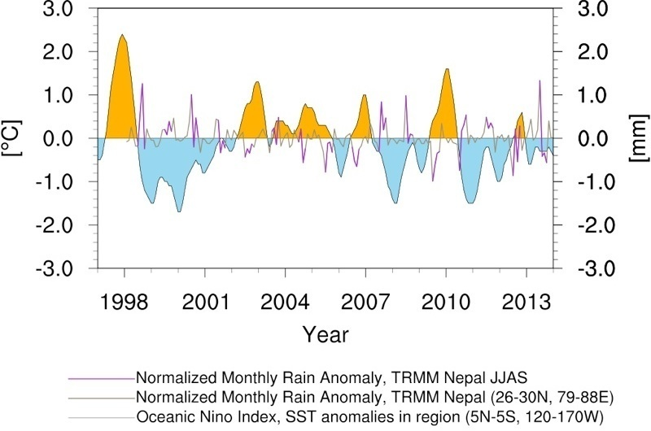

May 2014 ,
blogs
The NOAA Climate Prediction Centre, CFSv2 forecasts El Nino for the coming months. What does it mean for the 2014 monsoon rainfall in Nepal?
Tweet

The above figure shows the time-series of Oceanic Nino Index (ONI) and normalized monthly anomalies of TRMM measured precipitation over Nepal. Qualitatively, one can see that with positive ONI, there is a negative anomaly in monsoon rainfall (TRMM JJAS) over Nepal, which means relatively less rainfall amount in monsoon. So, following the prediction of positive ONI from NOAA, based upon this qualitative analysis, one could anticipate to have weaker monsoon in Nepal for 2014.